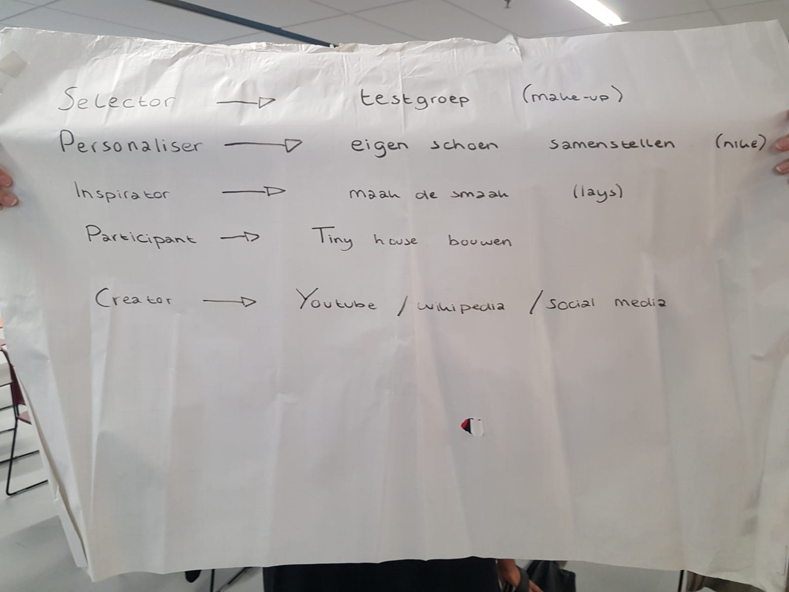

Workshop 1: Presentatie Co-Creatie
Tijdens de eerste workshop is er ingegaan op het onderwerp “Co-creatie”. Dit onderwerp draait om innovaties, zowel binnen een bedrijf als van producten. Bij co-creatie gaat het om het betrekken van de klanten bij die innovaties. Dit heeft verschillende voordelen. Om te beginnen zal het innovatieproces sneller gaan en worden er betere producten ontwikkelt. Verder worden gebruikers direct geïnformeerd en zal de klantrelatie verbeteren. Dit alles zal er uiteindelijk ook voor kunnen zorgen dat het imago van een bedrijf verbetert en zal het enthousiasme van de klanten voor gratis publiciteit en een snelle steun in de markt kunnen zorgen.
Er zijn vijf vormen van co-creatie, namelijk:
- Selector:hierbij legt de producent enkele productideeën voor aan de consument. Deze wordt gevraagd welk idee er in de markt gezet moet worden. Deze vorm valt te vergelijken met concepttesten en een traditioneel marktonderzoek. Denk hierbij aan een testgroep voor bijvoorbeeld make-up. Deze groep krijgt samples thuisgestuurd om deze vervolgens te testen en het bedrijf of de producent feedback te geven over de producten.
- Personaliser:hierbij kunnen consumenten bepaalde onderdelen van standaardproducten zelf aanpassen. Dit zou bijvoorbeeld kunnen gaan om het samenstellen van je eigen schoenen, wat bij Nike het geval is. Daar krijgen consumenten de kans hun schoenen samen te stellen qua kleur, om zo een unieke schoen te kunnen creëren.
- Inspirator: de producent lanceert een ideeënwedstrijd, waarbij consumenten hun idee in kunnen sturen. De producenten, of zelfs de consumenten, kiezen een winnaar. Meestal wordt het winnende idee in productie genomen. Zo heeft Lays een tijdje terug een wedstrijd georganiseerd, namelijk ‘Maak de Smaak’. Hierbij konden consumenten smaken opsturen welke zij graag in chips verwerkt wilden zien. Het idee van de winnaar is daadwerkelijk uitgevoerd en gemaakt tot een chipssmaak.
- Participant: de consumenten worden bij meerdere fases van het ontwikkelingsproces betrokken. Er is sprake van een intensieve en langdurige samenwerking tussen consument en producent. Het voorbeeld dat wij hier gebruikt hebben is dat van het bouwen van tiny houses. Deze worden vaak gebouwd met inspraak van de consument en naar haar wensen en ideeën. Vaak zijn deze consumenten nog bij het proces betrokken.
- Creator: hierbij verschaft de producent consumenten een platform waarop zij zelf hun eigen producten kunnen ontwikkelen. Denk aan Youtube en social media, waarbij mensen zelf content kunnen plaatsen naar eigen inzicht. Ook is Wikipedia hier een voorbeeld van, aangezien de Wikipedia-pagina’s worden samengesteld door de consumenten zelf. Men kan zelf aanpassingen doen aan zo’n pagina en informatie delen. (TTM, 2007)
Uiteindelijk is er in groepen gezocht naar voorbeelden bij elk van de vormen van co-creatie. Hieronder is het resultaat van mijn groep weergegeven.

De resultaten van onze groep hebben we gepresenteerd aan de rest van de studenten. Als eerste groepje wisten we niet wat de anderen hadden. Na onze korte presentatie kregen we wel van andere groepen te horen dat zij ongeveer dezelfde dingen hadden, maar soms bij een ander stadia van co-creatie. Dit is vervolgens kort besproken en we hebben kort uitgelegd waarom wij voor deze vorm hadden gekozen.
Bibliografie
- TTM, (2007). Co-creatie maakt klant tot ambassadeur: Van consumer naar prosumer.
Ga terug naar 'Smart Business' Ga naar volgende pagina